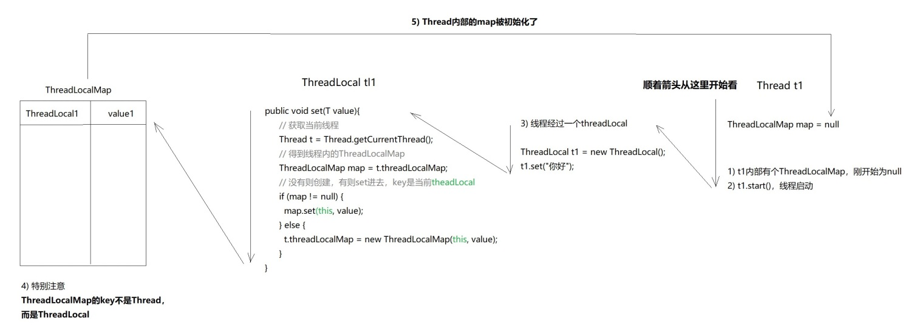

概念 ThreadLocal是一个本地线程副本变量工具类。主要用于将私有线程和该线程存放的副本对象做一个映射，各个线程之间的变量互不干扰，在高并发场景下，可以实现无状态的调用，特别适用于各个线程依赖不同的变量值完成操作的场景
ThreadLocal是属于java.lang包下的，Synchronized用于线程间的数据共享，而ThreadLocal则用于线程间的数据隔离
源码分析 set 1 2 3 4 5 6 7 8 9 10 11 12 13 14 15 16 17 18 19 public void set(T value) { Thread t = Thread.currentThread(); ThreadLocalMap map = getMap(t); if (map != null) { map.set(this, value); } else { createMap(t, value); } } ThreadLocalMap getMap(Thread t) { return t.threadLocals; } void createMap(Thread t, T firstValue) { t.threadLocals = new ThreadLocalMap(this, firstValue); }
可以看到实际上ThreadLocal中的值是存在其内部的ThreadLocalMap中的，而其key是ThreadLocal自身(注意不是Thread)，但ThreadLocalMap的实例却是Thread中属性：
1 ThreadLocal.ThreadLocalMap threadLocals = null;
也就是说是把value保存到给当前线程Thread的ThreadLocalMap中，并以当前ThreadLocal的实例作为key
ThreadLocalMap本质是每个Thread内部各存一份，互不干扰

get 1 2 3 4 5 6 7 8 9 10 11 12 13 public T get() { Thread t = Thread.currentThread(); ThreadLocalMap map = getMap(t); if (map != null) { ThreadLocalMap.Entry e = map.getEntry(this); if (e != null) { @SuppressWarnings("unchecked") T result = (T)e.value; return result; } } return setInitialValue(); }
一个Thread只能有一个ThreadLocalMap，第一次遇到的ThreadLocal会帮它创建一个Map塞进去，往后无论遇到多少个ThreadLocal，都是直接用那个Map，而且都是把自己作为key，往Map里存东西
ThreadLocalMap ThreadLocalMap是ThreadLocal类的一个静态内部类，它实现了键值对的设置和获取，每个线程中都有一个独立的ThreadLocalMap副本，它所存储的值，只能被当前线程读取和修改。ThreadLocal类通过操作每一个线程特有的ThreadLocalMap副本，从而实现了变量访问在不同线程中的隔离。因为每个线程的变量都是自己特有的，完全不会有并发错误。还有一点就是，ThreadLocalMap存储的键值对中的键是this对象指向的ThreadLocal对象，而值就是你所设置的对象了：
虽然ThreadLocalMap是ThreadLocal的静态内部类，但它们的实例对象并不存在继承或者包裹关系。完全可以当成两个独立的实例
1 2 3 4 5 6 7 8 9 10 11 12 13 static class ThreadLocalMap static class Entry extends WeakReference <ThreadLocal <?>> Object value; Entry(ThreadLocal<?> k, Object v) { super (k); value = v; } } }
可以看到ThreadLocalMap中存放对象的Entry的key是弱引用, 所以在外部所有强引用都去除后(外面的ThreadLocal被置为null)，则当前只有弱引用指向ThreadLocal对象，那么下一次GCThreadLocal对象就会被回收，进而避免了由于ThreadLocalMap中的引用仍然指向堆中的ThreadLocal，造成ThreadLocal的内存泄露
remove 1 2 3 4 5 6 7 8 9 10 11 12 13 14 15 16 17 18 19 20 21 22 23 24 25 26 27 28 29 //ThreadLocal public void remove() { ThreadLocalMap m = getMap(Thread.currentThread()); if (m != null) { m.remove(this); } } //ThreadLocalMap private void remove(ThreadLocal<?> key) { Entry[] tab = table; int len = tab.length; int i = key.threadLocalHashCode & (len-1); for (Entry e = tab[i]; e != null; e = tab[i = nextIndex(i, len)]) { if (e.get() == key) { e.clear(); expungeStaleEntry(i); return; } } } //Entry public void clear() { this.referent = null; }
可以看到就是获取当前Thread中的ThreadLocalMap，并根据Key(即threadLocal自身)删除value值
使用须知 上面说到源码中利用将ThreadLocal放到WeakReference，以避免由于ThreadLocal存在强引用而不能及时被回收造成内存泄露的问题。但这样会存在另一个问题，即当ThreadLocal被回收后，ThreadLocalMap中Entry的key被设置为了null, 我们无法再根据key移除value了, 这就造成了Entry的内存泄露(在ThreadLocal中，进行get，set操作的时候会清除Map里所有key为null的value)
为了避免这种情况下引起的内存泄露，每次使用完毕需及时清除
JDK建议ThreadLocal定义为private static，这样ThreadLocal的弱引用问题则不存在了
1 2 3 4 ThreadLocal<String> tl = new ThreadLocal<>(); tl.set("xxx"); // ...... tl.remove()
应用场景
在android中Looper、ActivityThread以及AMS中都用到了ThreadLocal。当某些数据是以线程为作用域并且不同线程具有不同的数据副本的时候，就可以考虑采用ThreadLocal。实际上像Spring等框架源码大量使用了ThreadLocal
1 2 3 4 5 6 7 8 9 10 static ThreadLocal<User> threadLocalUser = new ThreadLocal<>(); void processUser(user) { try { threadLocalUser.set(user); step1(); step2(); } finally { threadLocalUser.remove(); } }
场景1 每个线程需要一个独享对象（通常是工具类，典型需要使用的类有SimpleDateFormat和Random）
每个Thread内有自己的实例副本，不共享
比喻：教材只有一本，一起做笔记有线程安全问题。复印后没有问题，使用ThradLocal相当于复印了教材
1 2 3 4 5 6 7 8 9 10 11 12 /** * 使用ThreadLocal 定义一个全局的SimpleDateFormat */ private static ThreadLocal<SimpleDateFormat> simpleDateFormatThreadLocal = new ThreadLocal<SimpleDateFormat>() { @Override protected SimpleDateFormat initialValue() { return new SimpleDateFormat("yyyy-MM-dd HH:mm:ss"); } }; // 用法 String dateString = simpleDateFormatThreadLocal.get().format(calendar.getTime());
场景2 每个线程内需要保存全局变量（例如在拦截器中获取用户信息），可以让不同方法直接使用，避免参数传递的麻烦。Web开发时，有些信息需要从controller传到service传到dao，甚至传到util类。看起来非常不优雅，这时便可以使用ThreadLocal来优雅的实现：在拦截器的preHandle()中set，在afterCompletion()中remove()：
定义保存用户用的线程上下文
1 2 3 4 5 6 7 8 9 10 11 12 13 14 15 16 17 18 19 20 21 22 23 24 25 26 27 28 29 30 31 32 33 34 public class UserContext private UserContext () } private static final ThreadLocal<User> context = new ThreadLocal<>(); public static void set (User user) context.set(user); } public static User get () return context.get(); } public static void remove () context.remove(); } }
拦截器中设置和管理
1 2 3 4 5 6 7 8 9 10 11 12 13 14 15 16 17 18 19 20 21 22 23 24 25 26 27 28 29 30 31 32 33 34 35 36 37 38 39 40 public class ResourceInterceptor implements HandlerInterceptor @Override public boolean preHandle (HttpServletRequest request, HttpServletResponse response, Object object) throws Exception try { User user = ······ ; UserContext.set(user); return Boolean.TRUE; } catch (Exception e) { return Boolean.FALSE; } } @Override public void postHandle (HttpServletRequest request, HttpServletResponse response, Object object, ModelAndView mv) throws Exception { } @Override public void afterCompletion (HttpServletRequest request, HttpServletResponse response, Object object, Exception ex) throws Exception { UserContext.remove(); } }
controller或者service中获取(可以改造现有项目)
1 LoginUser user = UserContext.get();
场景3 在编写一个功能时需要把一个共有参数(这个参数在这中间是只读状态)一路传递到所有调用方法中
为了保证能释放ThreadLocal关联的实例，我们可以通过AutoCloseable接口配合try (resource) {…}结构，让编译器自动为我们关闭
1 2 3 4 5 6 7 8 9 10 11 12 13 14 15 16 17 18 19 20 21 22 23 24 25 26 27 28 29 30 31 32 33 34 35 36 37 38 39 40 41 public class UserContext implements AutoCloseable static final ThreadLocal<String> ctx = new ThreadLocal<>(); public UserContext (String user) ctx.set(user); } public static String currentUser () return ctx.get(); } @Override public void close () ctx.remove(); } } try (var ctx = new UserContext("Bob" )) { doHandle1(); doHandle2(); } public void doHandle1 () String currentUser = UserContext.currentUser(); doHandle3(); } public void doHandle2 () String currentUser = UserContext.currentUser(); ...... } public void doHandle3 () String currentUser = UserContext.currentUser(); ...... }
在编写AOP日志时，经常会用到的RequestContextHolder，其实内部也维护了ThreadLocal(有兴趣可以看看Spring是如何做到remove的-使用过滤器)
下面是一个使用 RequestContextHolder 重写的例子：
1 2 3 4 5 6 7 8 9 10 11 12 13 14 public class SecurityContextHolder private static final String SECURITY_CONTEXT_ATTRIBUTES = "SECURITY_CONTEXT" ; public static void setContext (SecurityContext context) RequestContextHolder.currentRequestAttributes().setAttribute( SECURITY_CONTEXT_ATTRIBUTES, context, RequestAttributes.SCOPE_REQUEST); } public static SecurityContext get () return (SecurityContext)RequestContextHolder.currentRequestAttributes() .getAttribute(SECURITY_CONTEXT_ATTRIBUTES, RequestAttributes.SCOPE_REQUEST); } }
除了使用 RequestContextHolder 还可以使用 Request Scope 的 Bean，或者使用 ThreadLocalTargetSource ，原理上是类似的。
Spring Security的基本组件SecurityContextHolder默认也是使用ThreadLocal策略来存储认证信息，在Web场景下的使用Spring Security，在用户登录时自动绑定认证信息到当前线程，在用户退出时，自动清除当前线程的认证信息(有兴趣可以看看SecurityContextHolder源码)，这里举个使用样例:
1 2 3 4 5 6 7 8 Object principal = SecurityContextHolder.getContext().getAuthentication().getPrincipal(); if (principal instanceof UserDetails) {String username = ((UserDetails)principal).getUsername(); } else { String username = principal.toString(); }
延伸-InheritableThreadLocal
Thread里通过两个变量持用ThreadLocalMap 对象，分别为：threadLocals和inheritableThreadLocals
InheritableThreadLocal用于子线程能够拿到父线程往ThreadLocal里设置的值
延伸-线程池中使用ThreadLocal注意要点 由于每个Thread一个ThreadLocalMap, 而线程池是会复用线程的，故需要注意的是，线程中的逻辑执行完毕后(类似lock的使用在finally中的处理)，一定要remove相关key，避免数据混乱
1 2 3 4 5 6 7 8 9 10 11 12 13 14 15 16 17 18 19 class MyThreadPoolExecutor extends ThreadPoolExecutor public MyThreadPoolExecutor (int i, int j, int k, TimeUnit seconds, ArrayBlockingQueue<Runnable> arrayBlockingQueue) super (i, j, k, seconds, arrayBlockingQueue); } @Override protected void beforeExecute (Thread t, Runnable r) MyThreadLocal.currentAgentId.set(888 ); } protected void afterExecute (Runnable r, Throwable t) MyThreadLocal.currentAgentId.set(null ); } }
Spring 框架 @Async中的使用 没有自定义线程池
没有配置线程池，每执行一次都会创建新的线程处理，只需要将new ThreadLocal替换为InheritableThreadLocal 即可获取
自定义线程池
配置线程池，每次执行都会由线程池分配线程，使用 JDK 提供的 InheritableThreadLocal 无法获取到数据，而需要使用 Alibaba 扩展 InheritableThreadLocal 的 TransmittableThreadLocal
pom.xml中加入引用
1 2 3 4 5 6 7 <dependency > <groupId > com.alibaba</groupId > <artifactId > transmittable-thread-local</artifactId > <version > 2.11.5</version > </dependency >
修改线程池配置
线程池中传输必须配合 TransmittableThreadLocal 和 TtlExecutors 使用
1 2 3 4 5 6 7 8 9 10 11 12 13 14 15 16 17 18 19 20 21 22 23 24 25 26 27 @EnableAsync @Configuration public class TaskExecutorConfig implements AsyncConfigurer @Override public Executor getAsyncExecutor () ThreadPoolTaskExecutor taskExecutor = new ThreadPoolTaskExecutor(); taskExecutor.setCorePoolSize(5 ); taskExecutor.setMaxPoolSize(1024 ); taskExecutor.setQueueCapacity(25 ); taskExecutor.initialize(); return TtlExecutors.getTtlExecutor(taskExecutor); } @Override public AsyncUncaughtExceptionHandler getAsyncUncaughtExceptionHandler () return new SimpleAsyncUncaughtExceptionHandler(); } }
修改ThreadLocal
1 2 3 4 5 6 7 8 9 10 11 12 13 14 15 16 17 18 19 20 21 22 23 24 25 26 27 28 29 30 31 32 33 34 35 public class UserContext private UserContext () } private static final ThreadLocal<User> context = new TransmittableThreadLocal<>(); public static void set (User user) context.set(user); } public static User get () return context.get(); } public static void remove () context.remove(); } }